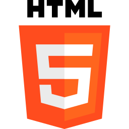
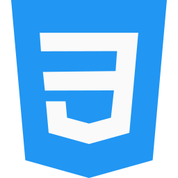

Habilidades
Estas son las herramientas y conocimientos técnicos con las que más he trabajado hasta ahora.

HTML
Estructura y semántica de páginas web.

CSS
Diseño, estilos y maquetación.

JavaScript
DOM, eventos, funciones y POO.
Bootstrap
Diseño responsive y componentes.
Manipulación del DOM
Creación y modificación dinámica de elementos HTML con JavaScript.
Programación orientada a objetos (POO)
Uso de clases, objetos, propiedades y métodos para organizar el código
Manejo de arreglos y eventos
Gestión de datos y respuesta a acciones del usuario.
Diseño web responsivo
Creación de interfaces adaptables a distintos dispositivos con CSS y Bootstrap.